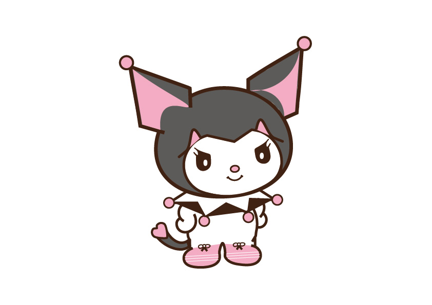

About the project
For one of my graphic design assignments, I chose to draw Kuromi. I’ve
always loved Hello Kitty characters—their playful, cute aesthetics make
them so fun to work with. Kuromi, with her edgy yet adorable style, felt
like the perfect choice. This project allowed me to explore digital
illustration while bringing a character I love to life. I focused on
capturing her signature look and personality, making sure the final
piece reflected the charm that makes Sanrio characters so iconic. It was
a fun and creative way to blend my love for illustration and cute
aesthetics.